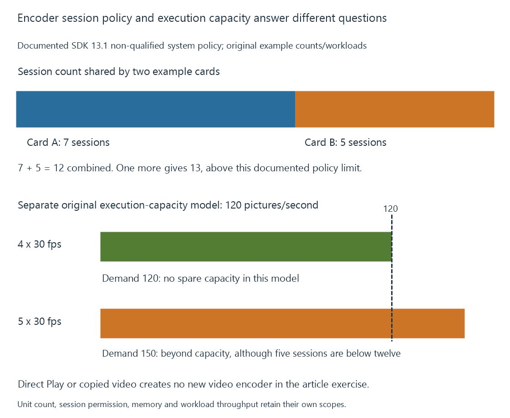

Concurrent encoder sessions, policy and capacity
Concurrent encoding is constrained by session policy, supported configurations and available processing/memory resources, with encoder sessions differing from client count and physical engine count.
An encoder session is a configured encoding operation with its own input/output and resource state. It is different from a playback client and from a physical encoder unit.
Several constraints cooperate: whether the session is permitted, whether its configuration is supported, and whether the combined workload has enough capacity and memory.
Count encoding operations, not just viewers
| Selected media work | New video-encoding operations in this example |
|---|---|
| Direct Play of original video | 0 |
| Copied video with converted audio | 0 |
| One new video representation | 1 |
| A job creating two video representations | 2 |
The table counts declared video-encoding work, not every process or audio operation. An application can implement its configured representations with additional internal details.
A server with several clients can therefore have fewer video encoders than clients. Conversely, another processing job can add encoder work without another viewer.
A physical unit is a work resource
A device can schedule several sessions through its available media engines. The physical count does not impose a universal one-session-per-engine rule.
Engine count is useful for aggregate work under the actual implementation, workload and driver scheduling. Decoder, filtering and memory resources can limit the complete route separately.

NVIDIA’s published policy has a system scope
SDK 13.1 distinguishes qualified and non-qualified products. It describes qualified products as resource-limited and gives twelve simultaneous encoding sessions per system across all non-qualified cards combined.
This is the referenced policy as checked on 11 October 2026, not a timeless limit for every driver version or a policy for other vendors.
For an original two-card example:
Card A: 7 sessions
Card B: 5 sessions
Combined: 12 sessions
A new session on either card would make the combined count 13.
Adding another non-qualified card does not make that stated combined policy twenty-four. A qualified card's resource-limited sessions have the separate scope described by the source.
Permission does not calculate sustained speed
Use an original declared encoder capacity of 120 prepared pictures per second for one defined configuration.
Four independent thirty-fps sessions request 120 pictures per second, leaving no modeled spare capacity. Five request 150, beyond the declared capacity even though five is below twelve.
The rates are invented. Changing codec, resolution, preset, preprocessing or device clock changes the relevant measured capacity.
The selected pipeline also has source decoding, filters and delivery. A fast encoder cannot consume pictures that a slower upstream stage has not prepared.
Memory and lifetime add another constraint
Each session can retain inputs, references, analysis state and output buffers. Their combined live memory must fit the usable resource budget.
The GPU-memory example shows two individually valid jobs exceeding a combined budget. A policy allowing those sessions does not change that allocation result.
See Also
- GPU memory limits in video processing
- Why hardware acceleration can still use the CPU
- NVIDIA NVENC
- NVIDIA Ada Lovelace media capabilities
- NVIDIA Blackwell media capabilities
- Concurrent playback workloads